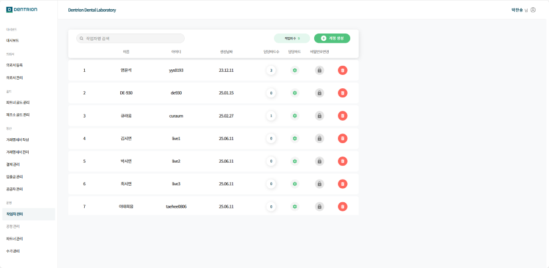
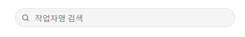
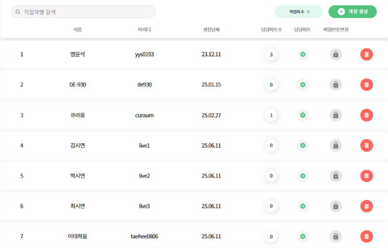
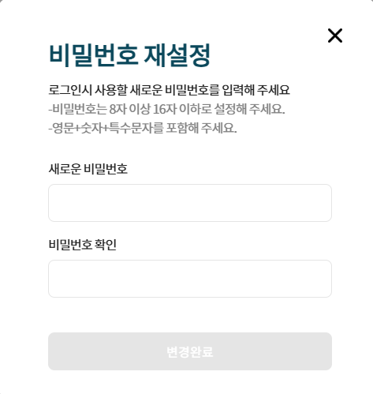

1.작업자 관리
이 화면은 작업자의 정보를 확인할 수 있으며, 계정 생성 및 비밀번호 변경, 삭제가 가능합니다.

1-1.기능 설명
1-1-1. 검색
작업자명을 검색할 수 있습니다.

1-1-2.작업자 목록
등록된 작업자의 정보를 확인할 수 있습니다.

1.이름 : 등록된 작업자명입니다.
2.아이디 : 등록된 작업자의 계정 아이디입니다.
3.생성날짜 : 작업자의 계정 생성 날짜입니다.
4.담당 파트 수 : 작업자의 담당 파트 수를 확인할 수 있습니다.
5.담당 파트 : 작업자의 담당 파트를 설정 할 수 있습니다.
담당 파트 설정방법
담당 파트 버튼 클릭 시 팝업창이 생성됩니다.
파트 목록에서 작업자의 담당 파트를 선택해주세요.
담당 파트 선택 후 화살표 버튼 클릭 시 파트 설정이 되고, [저장] 버튼이 활성화 됩니다.
6.비밀번호 변경 : 작업자 계정의 비밀번호를 재설정 할 수 있습니다.
비밀번호 재설정 설명

7.삭제 : 작업자의 계정을 삭제 할 수 있습니다.
8.작업자 수 : 생성된 작업자 수를 확인 할 수 있습니다.
1-1-3.계정 생성
[계정 생성] 버튼 클릭 시 팝업창이 생성됩니다.
계정 생성 방법
1.아이디 : 5~12자 이내, 영문(소문자), 숫자만 입력이 가능합니다.
2.비밀번호 : 8~15자 이내, 영문, 숫자, 특수문자를 포함한 새로운 비밀번호를 입력합니다.
3.비밀번호 확인 : 입력한 비밀번호를 다시 입력합니다.
4.작업자 이름 : 새로운 계정의 작업자 이름을 입력합니다.
5.생성하기 : 모든 입력 값이 입력 되었고, 정책 검증이 된 경우 버튼이 활성화됩니다.